source("../dsan-globals/_globals.r")Week 9: Statistical Inference
DSAN 5100: Probabilistic Modeling and Statistical Computing
Section 03
Class Sessions
Markov Models
\[ \DeclareMathOperator*{\argmax}{argmax} \DeclareMathOperator*{\argmin}{argmin} \newcommand{\bigexp}[1]{\exp\mkern-4mu\left[ #1 \right]} \newcommand{\bigexpect}[1]{\mathbb{E}\mkern-4mu \left[ #1 \right]} \newcommand{\convergesAS}{\overset{\text{a.s.}}{\longrightarrow}} \newcommand{\definedas}{\overset{\text{def}}{=}} \newcommand{\definedalign}{\overset{\phantom{\text{def}}}{=}} \newcommand{\eqeventual}{\overset{\mathclap{\text{\small{eventually}}}}{=}} \newcommand{\Err}{\text{Err}} \newcommand{\expect}[1]{\mathbb{E}[#1]} \newcommand{\expectsq}[1]{\mathbb{E}^2[#1]} \newcommand{\fw}[1]{\texttt{#1}} \newcommand{\given}{\mid} \newcommand{\green}[1]{\color{green}{#1}} \newcommand{\heads}{\outcome{heads}} \newcommand{\iid}{\overset{\text{\small{iid}}}{\sim}} \newcommand{\lik}{\mathcal{L}} \newcommand{\loglik}{\ell} \newcommand{\mle}{\textsf{ML}} \newcommand{\nimplies}{\;\not\!\!\!\!\implies} \newcommand{\orange}[1]{\color{orange}{#1}} \newcommand{\outcome}[1]{\textsf{#1}} \newcommand{\param}[1]{{\color{purple} #1}} \newcommand{\pgsamplespace}{\{\green{1},\green{2},\green{3},\purp{4},\purp{5},\purp{6}\}} \newcommand{\prob}[1]{P\left( #1 \right)} \newcommand{\purp}[1]{\color{purple}{#1}} \newcommand{\sign}{\text{Sign}} \newcommand{\spacecap}{\; \cap \;} \newcommand{\spacewedge}{\; \wedge \;} \newcommand{\tails}{\outcome{tails}} \newcommand{\Var}[1]{\text{Var}[#1]} \newcommand{\bigVar}[1]{\text{Var}\mkern-4mu \left[ #1 \right]} \]
Finite-State Automata
(Deterministic!) Only “accepts” strings with even number of 1s:

| Input String | Result | Input String | Result |
|---|---|---|---|
| \(\varepsilon\) | ✅ | 01 |
|
0 |
✅ | 10 |
|
1 |
1000000 |
||
00 |
✅ | 10000001 |
✅ |
- …But we’re trying to model probabilistic evolution!
Enter Markov Chains

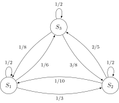
\[ \begin{array}{c c} & \begin{array}{c c c} 1\phantom{1} & \phantom{1}2\phantom{1} & \phantom{1}3 \\ \end{array} \\ \begin{array}{c c c}1 \\ 2 \\ 3 \end{array} & \left[ \begin{array}{c c c} 0 & 1/2 & 1/2 \\ 1/3 & 0 & 2/3 \\ 1/3 & 2/3 & 0 \end{array} \right] \end{array} \]
\[ \begin{array}{c c} & \begin{array}{c c c} 1\phantom{1} & \phantom{2}2\phantom{2} & \phantom{1}3 \\ \end{array} \\ \begin{array}{c c c}1 \\ 2 \\ 3 \end{array} & \left[ \begin{array}{c c c} 1/2 & 1/3 & 1/6 \\ 1/10 & 1/2 & 2/5 \\ 1/8 & 3/8 & 1/2 \end{array} \right] \end{array} \]

PageRank (Matrix Magic)
- What is the relevance of this abstract topic? ‚Ķü§ë
library(readr)
library(ggplot2)
goog_df <- read_csv("assets/google_yearly_revenue.csv")
ggplot(goog_df, aes(x=year, y=revenue_billions)) +
geom_bar(stat="identity", fill=cbPalette[1]) +
labs(
title = "Google Yearly Revenue, 2002-2022",
x = "Year",
y = "Revenue (Billion USD)"
) +
dsan_theme("full")
- PageRank = The “spark” that ignited the Google flame
PageRank Visualized
- Nodes = Webpages, Edges = Links

- Goal: Rank the relative “importance” of a site \(S_i\), taking into account the importance of other sites that link to \(S_i\)
- “Important” sites: linked to often, and linked to often by other important sites
Chickens and Eggs
- Paradoxical at first: how are we supposed to figure out the importance of a site \(S_i\), when that’s determined by
- the importance of sites \(S_j\) that link to \(S_i\), which is determined by
- the importance of sites \(S_k\) that link to sites \(S_j\), which is determined by
- the importance of the sites \(S_\ell\) that link to those sites \(S_k\), which is determined by…
- the importance of sites \(S_k\) that link to sites \(S_j\), which is determined by
- the importance of sites \(S_j\) that link to \(S_i\), which is determined by
\[ \begin{align*} \mathsf{Importance}(S_i) &= f(\mathsf{Importance}(S_{j \rightarrow i})) = f(f(\mathsf{Importance}(S_{k \rightarrow j \rightarrow i}))) \\ &= f(f(f(\mathsf{Importance}(S_{\ell \rightarrow k \rightarrow j \rightarrow i})))) = \cdots \end{align*} \]
Sanity hint: Remember infinite sums from calculus! They can converge, despite having infinitely-many terms… This is something like that, but for recursion (the mathematical term for an object whose definition refers to itself)
Resolving Recursive Definitions
- We can compute this importance ranking, despite its recursive definition!
- Recall, for example, the Fibonacci sequence: \(1, 1, 2, 3, 5, 8, 13, 21, \ldots\)
- Defined recursively!
\[ f(n) = \begin{cases} 1 & n = 1\text{ or }n = 2 \\ f(n-2) + f(n-1) & n > 2 \end{cases} \]
And yet, a guy named Bernoulli figured out
\[ f(n) = \frac{\varphi^n - \psi^n}{\varphi - \psi} = \frac{\varphi^n - \psi^n}{\sqrt{5}}, \]
where \(\varphi\) is the “Golden Ratio” \(\frac{1 + \sqrt{5}}{2}\) and \(\psi\) its conjugate \(\frac{1 - \sqrt{5}}{2}\).
The PageRank Process
- Every site starts with equal PageRank score: \(r^{(0)}_1 = r^{(0)}_2 = r^{(0)}_3 = \frac{1}{3}\).
- Each link \(S_i \rightarrow S_j\) is a vote of confidence that \(S_i\) is giving to \(S_j\)
- At each time \(t\), a site \(S_i\) “spends” whatever voting power it currently has (\(r^{(t)}_i\)) on the sites it links to.
- \(S_1\) casts one vote for itself and one vote for \(S_2\), thus spending \(\frac{1}{2}\) of its total PageRank on itself and \(\frac{1}{2}\) of its total PageRank on \(S_2\).
- State of the process at time \(t\): \(\mathbf{r}^{(t)} = \begin{bmatrix}r^{(t)}_1 & r^{(t)}_2 & r^{(t)}_3\end{bmatrix}^\top\)
- Can form a matrix specifying how this state evolves from time \(t\) to time \(t+1\)!
\[ \mathbf{E} = \begin{bmatrix} \frac{1}{2} & \frac{1}{2} & 0 \\ \frac{1}{2} & 0 & 1 \\ 0 & \frac{1}{2} & 0 \end{bmatrix} \; \leadsto \; \mathbf{r}^{(t+1)} = \mathbf{E}\mathbf{r}^{(t)} \]
- Given the “\(S_1\) casts one vote for itself…” part, can you say exactly what \(S_1\) will “spend” on itself and on \(S_2\) at time \(t = 0\) (in the first round)?
- We can use \(\mathbf{E}\) to figure out the state at each step, starting from \(t = 0\)!
\[ \begin{array}{c@{}c@{}c@{}c@{}c@{}c@{}c} \mathbf{r}^{(1)} & = & \mathbf{E}\mathbf{r}^{(0)} & = & \begin{bmatrix} \frac{1}{2} & \frac{1}{2} & 0 \\ \frac{1}{2} & 0 & 1 \\ 0 & \frac{1}{2} & 0 \end{bmatrix}\begin{bmatrix} \frac{1}{3} \\ \frac{1}{3} \\ \frac{1}{3}\end{bmatrix} & = & \begin{bmatrix} \frac{1}{3} \\ \frac{1}{2} \\ \frac{1}{6} \end{bmatrix} \\ ~ & ~ & ~ & ~ & ~ & \swarrow & ~ \\ \mathbf{r}^{(2)} & = & \mathbf{E}\mathbf{r}^{(1)} & = & \begin{bmatrix} \frac{1}{2} & \frac{1}{2} & 0 \\ \frac{1}{2} & 0 & 1 \\ 0 & \frac{1}{2} & 0 \end{bmatrix}\begin{bmatrix}\frac{1}{3} \\ \frac{1}{2} \\ \frac{1}{6}\end{bmatrix} & = & \begin{bmatrix}\frac{5}{12} \\ \frac{1}{3} \\ \frac{1}{4}\end{bmatrix} \\ ~ & ~ & ~ & ~ & ~ & \swarrow & ~ \\ \mathbf{r}^{(3)} & = & \mathbf{E}\mathbf{r}^{(2)} & = & \cdots & ~ & ~ \end{array} \]
Matrix Magic
- (1) Won’t we just have to run this forever? (2) How do we know it’ll converge to something?
- Answers: (1) No! (2) because Markov matrix magic!
- “Steady state” = state where \(\mathbf{r}^{(t)} = \mathbf{r}^{(t+1)} = \mathbf{r}^{(t+2)} = \cdots \definedas \mathbf{r}^*\). But this means
\[ \mathbf{r}^{(t+1)} = \mathbf{r}^{(t)} \iff \mathbf{E}\mathbf{r}^{(t)} = \mathbf{r}^{(t)} \iff \mathbf{E}\mathbf{r}^* = \mathbf{r}^* \]
- This \(\mathbf{r}^*\) is (by definition!) an Eigenvector of \(\mathbf{E}\) with Eigenvalue \(\lambda = 1\)!1
- In my opinion, along with e.g. insolubility of the quintic, this is maybe the most mind-blowing case of math magic :3
Solving the Matrix Magic
Since we already know the Eigenvalue of interest, \(\lambda = 1\), all that’s left is solving for its corresponding Eigenvector:
\[ \mathbf{E}\mathbf{r}^* = \mathbf{r}^* \iff \mathbf{E}\mathbf{r}^* - \mathbf{r}^* = \mathbf{0} \iff (\mathbf{E} - \mathbf{I})\mathbf{r}^* = \mathbf{0} \]
Written out, we see that this gives us a system of linear equations:
\[ \begin{bmatrix} \frac{1}{2} & \frac{1}{2} & 0 \\ \frac{1}{2} & 0 & 1 \\ 0 & \frac{1}{2} & 0 \end{bmatrix}\begin{bmatrix}r^*_1 \\ r^*_2 \\ r^*_3\end{bmatrix} = \begin{bmatrix}0 \\ 0 \\ 0\end{bmatrix} \iff \begin{array}{ccccccc}\frac{1}{2}r^*_1 & + & \frac{1}{2}r^*_2 & ~ & ~ & = & 0 \\ \frac{1}{2}r^*_1 & ~ & ~ & + & r^*_3 & = & 0 \\ ~ & ~ & \frac{1}{2}r^*_2 & ~ & ~ & = & 0\end{array} \]
which we can solve however we want!
To handle the fact that this system is underspecified, impose additional restriction that \(r^*_1 + r^*_2 + r^*_3 = 1\), so that the ranks form a probability distribution
The Point of All This
- The final restriction \(r^*_1 + r^*_2 + r^*_3 = 1\) ensures that the resulting PageRank values form a probability distribution
- This is called the Stationary Distribution of the Markov chain: represents the probability that a random walker through the chain will be at page \(S_i\) at a given time!
- Equivalently: expected proportion of total walking time a random-walker will spend at each node
- Every Markov chain has a Stationary Distribution! This fact has cool implications even above and beyond the Google $$$ implications üòú
Statistical Inference
Statistical Inference vs. Statistics
- Moving from understanding probability to getting things done using probability!
- Everything up to this point: understanding the “rules” of stochastic processes
- Now: Using what we know to allow us to draw inferences about populations without having to carry out a census
Samples vs. Populations
- Sample = The data you have
- Population = The thing you want to learn about, by looking at the sample
- Like “success” vs. “failure” in Bernoulli trials, no exact definition of what counts as sample vs. population
- What we call the “sample” and the “population” is vocabulary there to help us know what to do
Inference (Statistical and Otherwise)
What are we doing when we do science?
Remember that the filled-in nodes represent things we can observe, while the non-filled nodes represent things we have to infer from the observable data.
Examples Abound!
Zooming in on Euclid

→
Inference

For an absolutely beautiful visual presentation of Elements see here
Inference in the Diagram
Completing the Cycle
Our Case
If you’re wondering, “what happened to Hypothesis Testing?”, don’t worry, we’ll dive back into that over the next 2 weeks!
Asymptotic Laws for Random Samples
- Law of Large Numbers (LLN)
- Central Limit Theorem (CLT)
Stability out of Randomness
- \(X\) = result of coin flip
- Remembering that \(X\) is a random variable, so it maps outcomes to numbers: \(X(\)
 \() = 0\), \(X(\)
\() = 0\), \(X(\) \() = 1\)
\() = 1\) - We have no idea what the result of some single coin flip will be, yet we can be sure that the mean of many trials will converge to the expected value of \(0.5\)!
To check that you understand: what value would the mean of many dice rolls converge to?
Interactive Visualization

How Many is “Many”?
Code
library(ggplot2)
library(tibble)
library(dplyr)
set.seed(5100)
n_vals <- c(ceiling(sqrt(10)), 10, ceiling(10*sqrt(10)), 100, ceiling(100*sqrt(10)), 1000, ceiling(1000*sqrt(10)), 10000, ceiling(10000*sqrt(10)), 100000)
heads_data <- c()
total_data <- c()
for (n in n_vals) {
coin_flips <- rbinom(n, 1, 0.5)
num_heads <- sum(coin_flips)
heads_data <- c(heads_data, num_heads)
num_flipped <- length(coin_flips)
total_data <- c(total_data, num_flipped)
}
results <- tibble(n = n_vals, heads=heads_data, total=total_data)
results <- results %>% mutate(head_prop = heads / total)
#results
ggplot(results, aes(x=n, y=head_prop)) +
geom_hline(aes(yintercept=0.5, linetype='dashed'), color=cbPalette[2]) +
geom_line(aes(color='black'), fill=cbPalette[1], linewidth=g_linewidth, color=cbPalette[1]) +
geom_point(aes(color='black'), size=g_pointsize*0.9) +
scale_color_manual("", values=c("black","purple"), labels=c("Mean of n samples","Expected Value")) +
scale_linetype_manual("", values="dashed", labels="Expected Value") +
scale_fill_manual("", values=cbPalette[1], labels="95% CI") +
dsan_theme("full") +
theme(
legend.title = element_blank(),
legend.spacing.y = unit(0, "mm")
) +
labs(
title = "Estimates of Population Mean for Increasing Sample Sizes",
x = "n (Sample Size)",
y = "Sample Mean"
) +
scale_x_log10(breaks = c(10, 100, 1000, 10000, 100000), labels = c("10", "100", "1000", "10000", "100000"))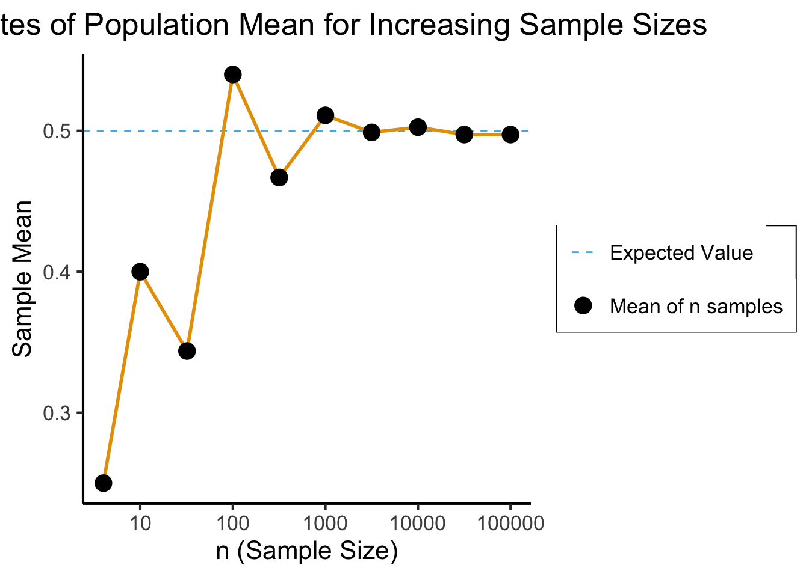
The Sample Mean
- Like the median we saw earlier (along with lots of other examples), sample mean is just a function of RVs
- Unlike the median, though, it is a function of a vector-valued RV \(\mathbf{X}_N\) (containing \(N\) scalar RVs)!2
- Let \(\mathbf{X}_N = \{X_1, X_2, \ldots, X_n\}\), where \(X_1\) is first observation, \(X_2\) second observation, and so on. Then:
\[ \overline{X}_N = f(\mathbf{X}_N) = \frac{1}{n}\sum_{i=1}^{n}X_i \]
Weak Law of Large Numbers (WLLN)
- Let \(\mathbf{X}_N = \{X_1, \ldots, X_n\} \iid \mathcal{D}\) be a random sample from a distribution \(\mathcal{D}\) with mean \(\mu\), finite variance. Let \(\overline{X}_N\) denote the sample mean from previous slide. Then
\[ \overline{X}_N \stackrel{p}{\longrightarrow} \mu \]
- \(\mathfrak{X}(N) \stackrel{p}{\longrightarrow} c\) means the Random Variable \(\mathfrak{X}(N)\) (a function of the sample size \(N\)) “converges in probability” to the scalar value \(c\). Formally:
\[ \mathfrak{X}(N) \overset{p}{\longrightarrow} c \iff \forall \varepsilon > 0 \left[ \lim_{N \rightarrow \infty}\Pr\left( | \mathfrak{X}(N) - c | < \varepsilon \right) = 1 \right] \]
Strong Law of Large Numbers (SLLN)
- Same setup as last slide, but
\[ \overline{X}_N \convergesAS \mu \]
- \(\mathfrak{X}(N) \convergesAS c\) means the Random Variable \(\mathfrak{X}(N)\) (a function of the sample size \(N\)) “converges almost surely” to the scalar value \(c\). Formally:
\[ \mathfrak{X}(N) \convergesAS c \iff \Pr\left( \lim_{N \rightarrow \infty} \mathfrak{X}(N) = c \right) = 1 \]
- SLLN \(\implies\) WLLN, but WLLN \(~\nimplies\) SLLN!
- WLLN easy to prove, SLLN very un-easy to prove
Central Limit Theorem
- We’ll never actually reach \(N = \infty\), so we zoom in on how close our sample-based estimate gets to the true value
- Central Limit Theorem says: these “closeness” values are normally distributed!
- LLN guarantees that \(X_N \; \; \eqeventual \; \; \mu\)
- CLT tells us what the gap \((X_N - \mu)\) looks like
Formal CLT
- Sampled observations: \(\mathbf{X}_N = \{X_1, \ldots, X_n\}\)
- \(\expect{X_i} = \mu, \Var{X_i} = \sigma^2 < \infty\)
- \(\overline{X}_N \definedas M_1(\mathbf{X}_N) = \frac{X_1 + \cdots + X_n}{N}\)
\[ \frac{\overline{X}_N - \mu}{\sigma / \sqrt{N}} \overset{\text{asymp}}{\sim} \mathcal{N}(0,1) \]
When is \(\mathcal{N}(0, 1)\) a “good” approximation?
Code
# Prepare data for all plots
max_n <- 10000
num_reps <- 1000
all_rolls <- replicate(
num_reps,
sample(1:6, size = max_n, replace = TRUE, prob = rep(1 / 6, 6))
)
gen_clt_plot <- function(n) {
exp_val <- 3.5
sigma <- sqrt(35/12)
denom <- sigma / sqrt(n)
# Get the slice of all_rolls for this n
n_rolls <- all_rolls[1:n,]
sample_means <- colMeans(n_rolls)
norm_gaps <- (sample_means - exp_val) / denom
n_df <- tibble(norm_gap=norm_gaps)
#if (n == 5) {
# print(sample_means)
# print(n_df)
#}
ggplot(n_df, aes(x = norm_gap)) +
geom_histogram(aes(y = after_stat(density)), binwidth = 1/2) +
#geom_density() +
stat_function(fun=dnorm, size=g_linesize) +
dsan_theme("quarter") +
labs(
title = paste0("n = ",n),
x = "Normalized Sample Gap"
)
}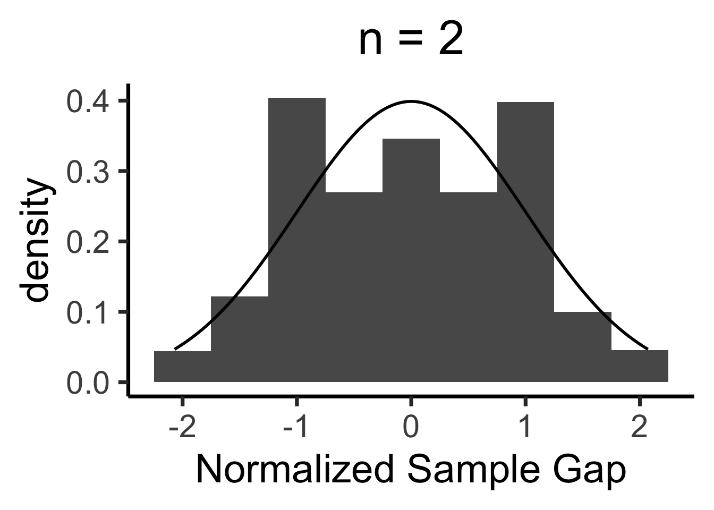
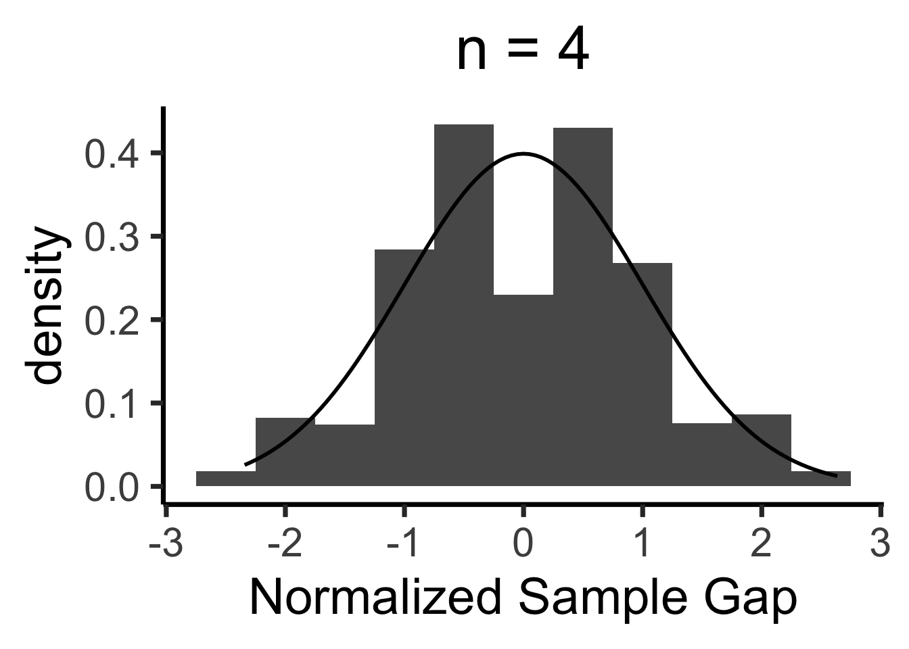
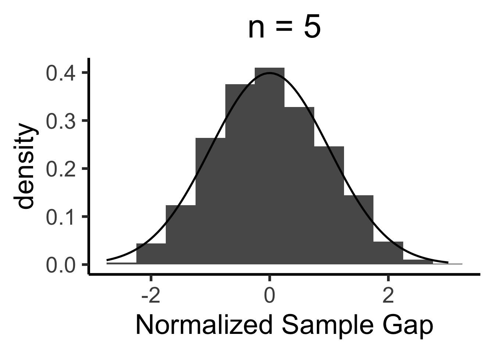
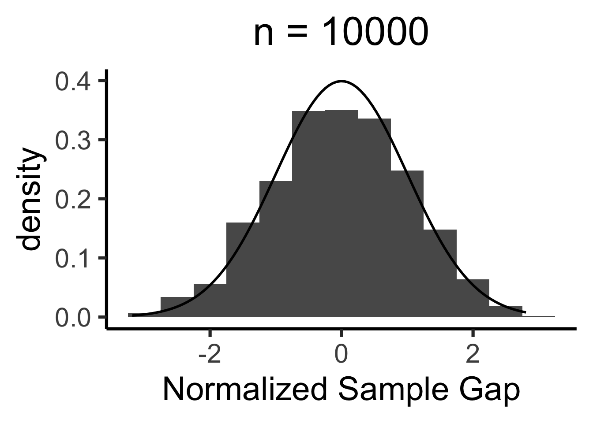
Q-Q Plots
Code
gen_qq <- function(n) {
n_rolls <- all_rolls[1:n,]
sample_means <- colMeans(n_rolls)
qq_df <- tibble(smean = sample_means)
qq_plot <- ggplot(qq_df, aes(sample = smean)) +
stat_qq() + stat_qq_line() +
dsan_theme("quarter") +
labs(
title = paste0("n = ",n)
)
return(qq_plot)
}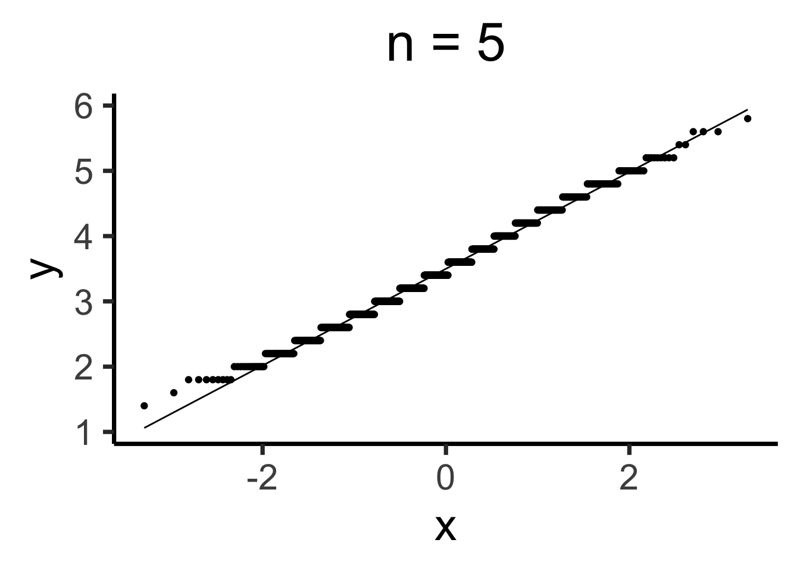
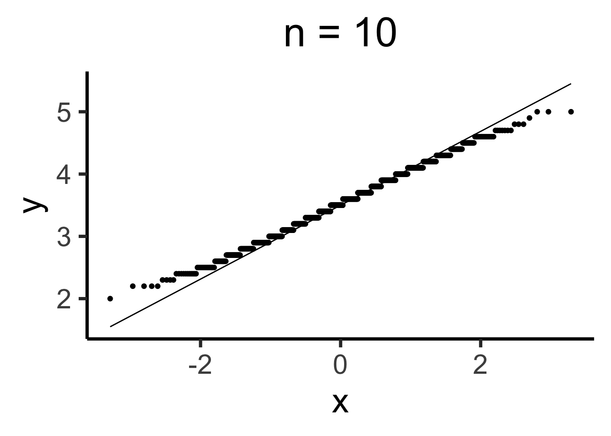
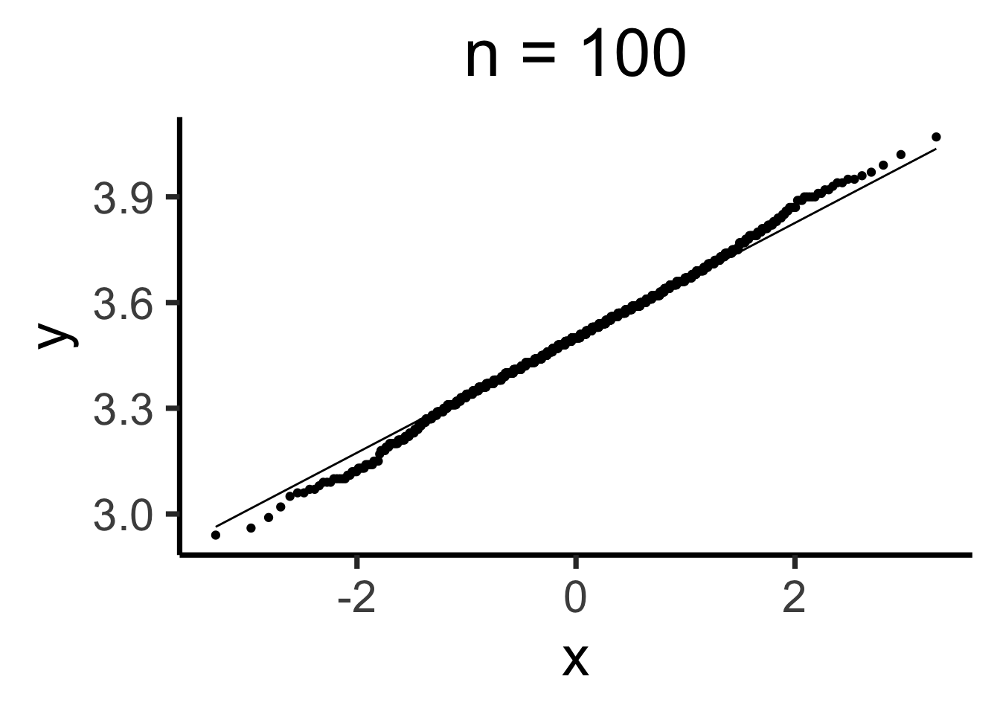
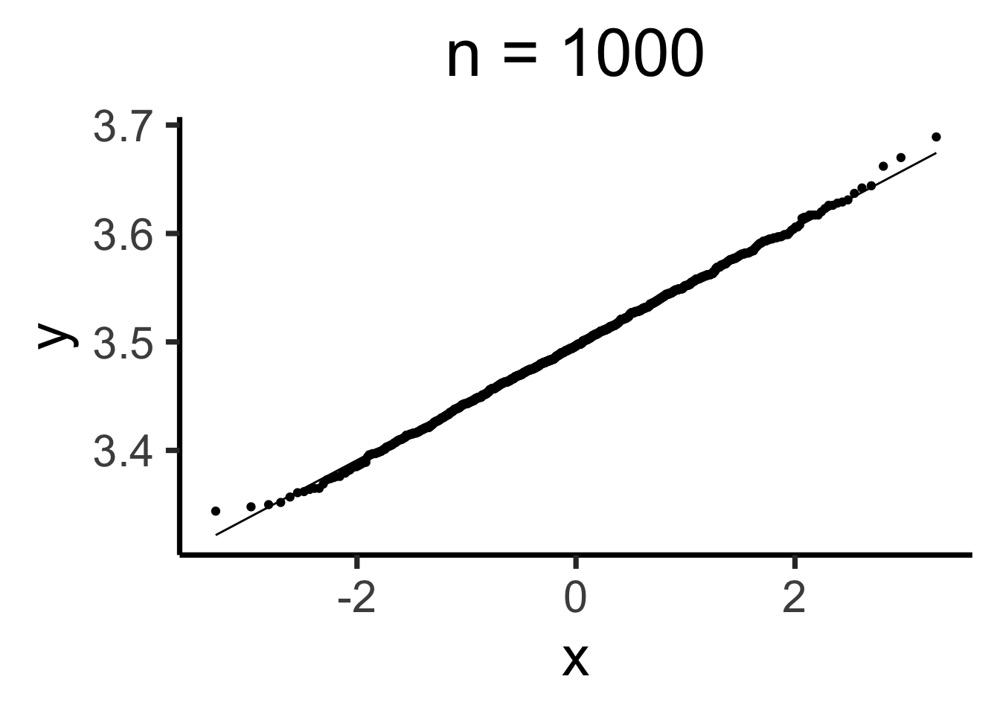
Estimating Parameters
- Maximum Likelihood Estimation (MLE)
- Generalized Method of Moments (GMM) Estimation
Maximum Likelihood Estimation
- Creating a model \(\mathcal{M}\) w/parameters \(\param{\theta}\) means specifying
\[ \mathcal{M} = \Pr(\underbrace{x_1, \ldots, x_n}_{\text{Observed Data}} \mid \underbrace{\param{\theta}}_{\text{Model Parameters}}) \]
- When we view this as a function of \(\param{\theta}\), given the observed data, we call it the likelihood function \(\mathcal{L}_{\mathcal{M}}(\param{\theta} \mid x_1, \ldots, x_n)\)
- Read this as “the likelihood that our model \(\mathcal{M}\), with parameters \(\param{\theta}\), produced the data \(x_1, \ldots, x_n\)”
Probability Models are Generative Models
- A given choice of model parameters \(\param{\theta}\) can be used to generate simulated datapoints!
- Simple example: \(X \sim \text{Bern}(\param{p})\). Just one parameter, \(\param{\theta} = \{\param{p}\}\)
- We observe 10 coin flips: 8 heads, 2 tails. Of all possible Bernoulli distributions (parameterized by \(\param{p}\)), which is most likely to generate this data?
Generative Models
Given a choice of \(\param{\theta}\), we can generate simulated datasets (here 10 for each labeled value of \(\param{p}\)), then compute likelihood as proportion of datasets with 8 heads, 2 tails
From plot: (Among these vals) \(\param{p} = 0.8\) is maximum likelihood estimate
library(tibble)
library(ggplot2)
library(dplyr)
set.seed(1948)
obs_heads <- 8
num_flips <- 10
num_reps <- 10
p_vals <- c(0.01, 0.2, 0.4, 0.6, 0.8, 0.99)
obs_matches <- c()
for (i in 1:length(p_vals)) {
cur_p <- p_vals[i]
theta_str <- sprintf("%.2f", cur_p)
sim_data <- replicate(
num_reps,
rbinom(num_flips, 1, cur_p)
)
#print(sim_data)
#data_str <- paste0(sim_data, collapse=", ")
num_heads <- colSums(sim_data)
#print(num_heads)
num_matches <- sum(num_heads == obs_heads)
obs_matches <- c(obs_matches, num_matches)
#print(num_matches)
#print(num_heads)
num_tails <- num_flips - num_heads
#print(num_tails)
data_strs <- paste0("[",num_heads," heads, ",num_tails," tails]")
data_str <- paste0(data_strs, collapse=", ")
#writeLines(paste0("p = ",theta_str,": ",data_str))
}
#print(obs_matches)
result_df <- tibble(p=as.character(p_vals), num_matches=obs_matches)
result_df <- result_df %>% mutate(prop_matches = obs_matches / num_reps)
ggplot(result_df, aes(x=p, y=prop_matches)) +
geom_bar(stat = 'identity', fill=cbPalette[1]) +
dsan_theme("quarter") +
# theme(
# axis.title.y = element_text(size = 12)
# ) +
labs(
title = "Likelihood of data (8 heads, 2 tails) given p",
y = "Proportion of times (8,2) generated"
)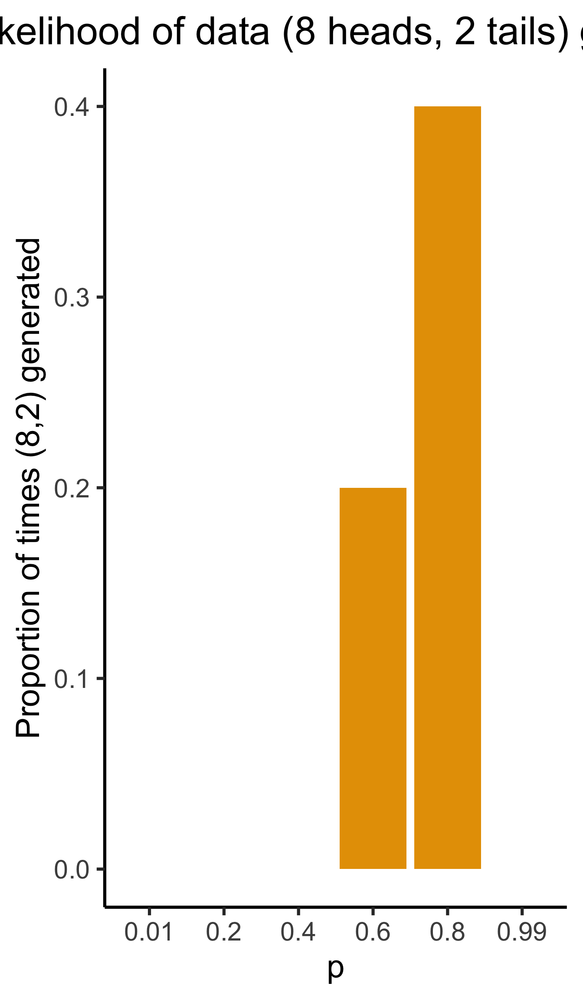
Simulations \(\rightarrow\) Math
Prev example was overkill: we can solve for optimal \(\param{p}\) value…
\[ \begin{align*} p^* &\overset{\phantom{x_i\text{ indep}}}{=} \argmax_{\param{p}} \mathcal{L}(x_1, \ldots, x_n \mid \param{p}) \\ &\overset{x_i\text{ indep}}{=} \argmax_{\param{p}} \mathcal{L}(x_1 \mid \param{p})\mathcal{L}(x_2 \mid \param{p}) \cdots \mathcal{L}(x_n \mid \param{p}) \end{align*} \]
- What are the individual \(\mathcal{L}(x_i \mid \param{p})\) terms?
- How do we maximize the product \(\mathcal{L}(x_1 \mid \param{p}) \cdots \mathcal{L}(x_n \mid \param{p})\)?
Math Magic 1
1. What are the individual \(\Pr(x_i \mid \param{p})\) terms?
\(X \sim \text{Bern}(\param{p})\), so
\[ \begin{align*} \Pr(X = x_i \mid \param{p}) &= \begin{cases}1 - \param{p} & x_i = 0 \\ \param{p} & x_i = 1\end{cases} \; \leftarrow \genfrac{}{}{0pt}{}{\text{ Non-differentiable}}{üò≠} \\ &\overset{\text{math}}{\underset{\text{magic}}{=}} (1-\param{p})^{1-x_i}\param{p}^{x_i} \; \leftarrow \text{ Differentiable! üò≤} \end{align*} \]
Why do we need it to be differentiable? Stay tuned…
Math Magic 2
2. How do we maximize the product?
\[ p^* = \argmax_{\param{p}} f(\param{p}) \implies f'(p^*) = 0 \]
To maximize likelihood, we need to find its derivative3, set equal to 0, and solve:

\[ \begin{align*} &\frac{d}{d\param{p}}\lik(x \mid \param{p}) = 0 \iff \\ &\frac{d}{d\param{p}}\left[\lik(x_1 \mid \param{p})\lik(x_2 \mid \param{p})\cdots \lik(x_n \mid \param{p})\right] = 0 \end{align*} \]
Obstacle: Products vs. Sums
- Finding \(\frac{d}{d\param{p}}\left[ \lik(x_1)\lik(x_2)\cdots \lik(x_n)\right]\) is a doozy, even with just \(n = 2\) datapoints:
\[ \begin{align*} &\frac{d}{d\param{p}}\left[ \lik(x_1)\lik(x_2) \right] = \left( \frac{d}{d\param{p}}\lik(x_1)\right) \cdot \lik(x_2) + \lik(x_1)\cdot \left( \frac{d}{d\param{p}}\lik(x_2) \right) \\ &= (1-\param{p})^{-x_1}\param{p}^{x_1-1}(x_1-\param{p})\cdot (1-\param{p})^{1-x_2}\param{p}^{x_2} \\ &+ (1-\param{p})^{1-x_1}\param{p}^{x_1} \cdot (1-\param{p})^{-x_2}\param{p}^{x_2-1}(x_2 - \param{p}) %&= \frac{d}{d\theta}\left[ (1-p)^{1-x_1}p^{x_1}(1-p)^{1-x_2}p^{x_2} \right] \end{align*} \]
- Complicating factor: \(\lik(x_i)\) terms are all multiplied together, forcing us to use product rule: \(\frac{d}{d\param{p}}\left[\lik(x_1)\lik(x_2)\right] = \left(\frac{d}{d\param{p}}\lik(x_1)\right)\cdot \lik(x_2) + \lik(x_1)\cdot \left(\frac{d}{d\param{p}}\lik(x_2)\right)\)
- If we had terms that were added rather than multiplied, we’d have a much easier time: \(\frac{d}{d\param{p}}\left[ \lik(x_1) + \lik(x_2)\right] = \frac{d}{d\param{p}}\lik(x_1) + \frac{d}{d\param{p}} \lik(x_2)\)4
- So, what math operation do we know that turns multiplications into additions?
Math Magic 3: Log-Likelihood
\[ \log(a\cdot b) = \log(a) + \log(b) \]
Bingo! So, can we maximize \(\loglik(x_i) = \log(\mathcal{L}(x_i))\) rather than \(\mathcal{L}(x_i)\)? Bingo again! Because logarithms are monotonic,
\[ x^* = \argmax_x \left[ \log\left(f(x)\right) \right] \iff x^* = \argmax_x \left[ f(x) \right] \]
So, we can just solve
\[ p^* = \argmax_{\param{p}} \left[ \ell(x_1, \ldots, x_n)\right] \]
Simplifying
Our problem simplifies to figuring out
\[ \begin{align*} \frac{d}{d\param{p}}\left[ \log \left( \lik(x_1)\cdots \lik(x_n) \right) \right] &= \frac{d}{d\param{p}}\left[ \log \lik(x_1) + \log\lik(x_2) + \cdots + \log\lik(x_n) \right] \\ &= \frac{d}{d\param{p}}\left[ \ell(x_1) + \ell(x_2) + \cdots + \ell(x_n) \right] = \frac{d}{d\param{p}}\left[ \sum_{i=1}^n \ell(x_i)\right] \end{align*} \]
But since the derivative is an additive operator, \(\frac{d}{d\param{p}}\left[ \sum_{i=1}^n \ell(x_i) \right] = \sum_{i=1}^n \frac{d}{d\param{p}}\left[ \ell(x_i) \right]\), so we just have to compute \(\frac{d}{d\param{p}}\ell(x_i)\)! No product rule required (we still need chain rule):
\[ \begin{align*} \frac{d}{d\param{p}}\left[ \ell(x_i) \right] &= \frac{d}{d\param{p}}\left[ \log((1-\param{p})^{1-x_i}\param{p}^{x_i}) \right] = \frac{d}{d\param{p}}\left[(1-x_i)\log(1-\param{p}) + x_i\log(\param{p})\right] \\ &= (1-x_i)\frac{d}{d\param{p}}\log(1-\param{p}) + x_i\frac{d}{d\param{p}}\log(\param{p}) = -\frac{1-x_i}{1-\param{p}} + \frac{x_i}{\param{p}} \\ &= \frac{\param{p} - x_i}{(\param{p}-1)\param{p}} \end{align*} \]
Maximizing
Now that we know \(\frac{d}{d\param{p}}\ell(x_i)\), we set our log-likelihood equation equal to zero to find the likelihood-maximizing \(\param{p}\) value, \(p^*\):
\[ \begin{align*} &\sum_{i=1}^n\frac{d}{d\param{p}}\ell(x_i) = 0 \iff \sum_{i=1}^n \frac{p^* - x_i}{(p^*-1)p^*} = 0 \\ &\iff -\frac{1}{(p^*-1)p^*}\sum_{i=1}^nx_i - np^* = 0 \\ &\iff \sum_{i=1}^nx_i = np^* \iff \boxed{p^* = \frac{\sum_{i=1}^nx_i}{n}} \end{align*} \]
MLE Intuition
\[ p^* = \frac{\sum_{i=1}^nx_i}{n} = \frac{\sum_{i=1}^n \mathbf{1}[x_i = 1]}{n} \genfrac{}{}{0pt}{}{\leftarrow \text{\# Heads}}{\leftarrow \text{\# Flips }} \]
- MLE almost always matches intuition! Example: given data \(x_1, \ldots, x_n\), what Normal distribution best fits this data?
- Same as asking: what parameter settings for \(\mathcal{N}(\param{\mu}, \param{\sigma^2})\) are most likely to produce \(x_1, \ldots, x_n\)? The answer:
\[ \mu^* = \frac{\sum_{i=1}^n x_i}{n} \; \; \; \sigma^2_* = \frac{\sum_{i=1}^n (x_i-\mu^*)^2}{n} \]
The Dark Side of MLE
- Sometimes steers us in the wrong direction!
- Consider values from previous slide, as estimators for population \(\mu\) and \(\sigma^2\): \(\mu^*\) unbiased if \(\expect{\mu^*} = \mu\):
\[ \begin{align*} \expect{\mu^*} &= \bigexpect{\frac{\sum_{i=1}^nx_i}{n}} = \frac{1}{n}\sum_{i=1}^n\expect{x_i} \\ &= \frac{1}{n}\sum_{i=1}^n\mu = \frac{n\mu}{n} = \mu \; ✅ \end{align*} \]
- So far so good. How about \(\sigma^2_*\)?
MLE as Biased Estimator
- Before we think about \(\expect{\sigma^2_*}\), let’s rewrite \(\sigma^2_*\):
\[ \begin{align*} \sigma^2_* &= \frac{1}{n}\sum_{i=1}^n(x_i - \mu^*)^2 = \frac{1}{n}\sum_{i=1}^n \left( x_i^2 - 2 \mu^* x_i + (\mu^*)^2 \right) \\ &= \frac{1}{n}\sum_{i=1}^nx_i^2 - 2\mu^*\underbrace{\frac{\sum_{i=1}^nx_i}{n}}_{\mu^*} + (\mu^*)^2 = \frac{1}{n}\sum_{i=1}^nx_i^2 - (\mu^*)^2 \\ &= \frac{1}{n}\sum_{i=1}^nx_i^2 - (\mu^*)^2 \end{align*} \]
- Now we’re ready to compute \(\expect{\sigma^2_*}\)!
Computing \(\mathbb{E}[\sigma^2_*]\)
\[ \begin{align*} \expect{\sigma^2_*} &= \bigexpect{\frac{1}{n}\sum_{i=1}^nx_i^2 - (\mu^*)^2} = \frac{1}{n}\sum_{i=1}^n \expect{x_i^2} - \expect{(\mu^*)^2} \end{align*} \]
- What do we know about \(\expect{x_i^2}\)? Remember the (alternate) definition of variance: \(\Var{X} = \expect{X^2} - \left(\expect{X}\right)^2\). Then
\[ \expect{X^2} = \Var{X} + \left(\expect{X}\right)^2 \]
So let’s plug in the right side when we see \(\expect{X^2}\) or \(\expect{(\mu^*)^2}\):
\[ \begin{align*} \frac{1}{n}\sum_{i=1}^n \expect{x_i^2} - \expect{(\mu^*)^2} &= \frac{1}{n}\sum_{i=1}^n\left(\Var{X} + \left(\expect{X}\right)^2\right) - \expect{(\mu^*)^2} \\ &= (\sigma^2 + \mu^2) - \left(\Var{\mu^*} + \left(\expect{\mu^*}\right)^2\right) \end{align*} \]
Almost There!
We know that \(\expect{\mu^*} = \mu\), but what is \(\Var{\mu^*}\)? Remember that \(\Var{aX} = a^2\Var{X}\)!
\[ \Var{\mu^*} = \bigVar{\frac{1}{n}\sum_{i=1}^nx_i} = \frac{1}{n^2}\sum_{i=1}^n\Var{x_i} = \frac{n\sigma^2}{n^2} = \frac{\sigma^2}{n} \]
And we plug back in to get:
\[ \begin{align*} \expect{\sigma^2_*} &= \sigma^2 + \mu^2 - \Var{\mu^*} - \left(\expect{\mu^*}\right)^2 \\ &= \sigma^2 + \mu^2 - \frac{\sigma^2}{n} - \mu^2 = \sigma^2 - \frac{\sigma^2}{n} \\ &= \frac{n\sigma^2 - \sigma^2}{n} = \frac{\sigma^2(n-1)}{n} \\ &= \color{red}{\left(\frac{n-1}{n}\right)\sigma^2} \neq \sigma^2 \; üíÄ \end{align*} \]
Why Does This Happen?: Handwaving
- Long story short, we underpredict the population variance because we already used some of the data to compute \(\mu^*\)!
- This is where the degrees of freedom heuristic comes in:
- When we construct an estimate \(e\), \(df(e) = n - k_e\)
- \(k_e =\) number of other estimates used to calculate \(e\)!
Handwavy Intuition
- Consider \(X_1, X_2 \sim \mathcal{N}(0,1)\): \(\mu = 0\), \(\sigma^2 = 1\).
\[ \expect{\mu^*} = \bigexpect{\frac{X_1 + X_2}{2}} = \frac{1}{2}\left(\expect{X_1} + \expect{X_2}\right) = 0 = \mu \; ✅ \]
\[ \begin{align*} \expect{\sigma^2_*} &= \frac{1}{2}\bigexpect{(X_1 - \mu^*)^2 + (X_2 - \mu^*)^2} \\ &= \frac{1}{2}\bigexpect{\left(X_1^2 + \mu^2_* -2\mu^*X_1\right) + \left(X_2^2 + \mu^2_* - 2X_2\mu^*\right)} \\ &= \frac{1}{2}\expect{X_1^2 + X_2^2 + 2\mu_*^2 - 2\mu^*X_1 - 2\mu^*X_2} \\ &= \frac{1}{2}\left(\expect{X_1^2} + \expect{X_2^2} + 2\expect{\mu_*^2} - 2\expect{\mu^*X_1} - 2\expect{\mu^*X_2}\right) \\ &\implies \boxed{\expect{\sigma^2_*} = \frac{1}{2}\sigma^2} \end{align*} \]
- We’re off by \(\frac{1}{2}\)! What to do?
Handwavy Solution
- We can account for degrees of freedom, correcting the MLE by a factor of \(\frac{n}{df(e^*)}\)!
- \(e^\circledast = \frac{n}{df(e^*)}e^*\)
- Ex: Since \(\expect{\sigma_*^2} = \frac{n-1}{n}\sigma^2\), we can instead use \(\sigma^2_\circledast = \frac{n}{n-1}\sigma^2_*\). This gives us:
\[ \expect{\sigma^2_\circledast} = \bigexpect{\frac{n}{n-1}\sigma^2_*} = \frac{n}{n-1}\frac{n-1}{n}\sigma^2 = \color{green}{\sigma^2} \; ✅ \]
21st-Century Solution
- Be Bayesian, use priors on parameters (creating hyperparameters)!
- Pretend we know \(\sigma^2\), but want to find the “best” value of \(\mu\):
\[ \begin{array}{rlccc} X_1, X_2 \overset{iid}{\sim} \mathcal{N}( &\hspace{-5mm}\mu\hspace{0.5mm}, &\hspace{-8mm}\overbrace{\sigma^2}^{\large\text{known}}\hspace{-2mm}) & & \\ &\hspace{-4mm}\downarrow & ~ &\hspace{-10mm}{\small\text{estimate}} & \hspace{-6mm} & \hspace{-8mm}{\small\text{uncertainty}} \\[-5mm] &\hspace{-5mm}\mu &\hspace{-5mm}\sim \mathcal{N}&\hspace{-7mm}(\overbrace{m}&\hspace{-12mm}, &\hspace{-16mm}\overbrace{s}) \end{array} \]

Single Datapoint
- Let’s consider the estimate of \(\mu\) from a single datapoint \(X_i\). MLE just gives us \(\mu^* = X_i\). How about MAP estimate?
\[ \lik\left(X_i, \mu, m, s\right) \overset{\text{factors}}{\underset{\text{into}}{=}} P(X_i \mid \mu)P(\mu \mid m, s)P(m, s) \]
- Remembering the pdf of the Normal distribution, we have:
\[ \lik\left(X_i, \mu, m, s\right) = \frac{1}{\sigma\sqrt{2\pi}}\exp\left[-\frac{(X_i-\mu)^2}{2\sigma^2}\right]\frac{1}{s\sqrt{2\pi}}\exp\left[-\frac{(\mu - m)^2}{2s^2}\right] \]
- Then, remembering that we can maximize the log-likelihood rather than the likelihood:
\[ \ell(X_i, \mu, m, s) = \log\left[\frac{1}{\sigma\sqrt{2\pi}}\right] - \frac{(X_i-\mu)^2}{2\sigma^2} + \log\left[\frac{1}{s\sqrt{2\pi}}\right] - \frac{(\mu - m)^2}{2s^2} \]
Taking the Derivative
- Taking the derivative gives us:
\[ \begin{align*} \frac{\partial\ell}{\partial \mu} &= \frac{\partial}{\partial\mu}\left[ {\color{red}\cancel{\color{black}\log\left[\frac{1}{\sigma\sqrt{2\pi}}\right]}} - \frac{(X_i-\mu)^2}{2\sigma^2} + {\color{red}\cancel{\color{black}\log\left[\frac{1}{s\sqrt{2\pi}}\right]}} - \frac{(\mu - m)^2}{2s^2}\right] \\ &= - \frac{1}{2\sigma^2}\cdot\frac{\partial}{\partial\mu}\left[{\color{red}\cancel{\color{black}X_i^2}} + \mu^2 - 2X_i\mu\right] - \frac{1}{2s^2}\cdot\frac{\partial}{\partial\mu}\left[\mu^2 + {\color{red}\cancel{\color{black}m^2}} - 2\mu m\right] \\ &= -\frac{1}{2\sigma^2}\cdot (2\mu -2X_i) - \frac{1}{2s^2}\cdot (2\mu - 2m) = \frac{X_i-\mu}{\sigma^2} + \frac{m - \mu}{s^2} \end{align*} \]
- And we set equal to zero and solve to obtain the MAP estimate:
\[ \begin{align*} &\frac{X_i - \mu^*}{\sigma^2} + \frac{m - \mu^*}{s^2} = 0 \iff \frac{\mu^*}{\sigma^2} + \frac{\mu^*}{s^2} = \frac{X_i}{\sigma^2} + \frac{m}{s^2} \iff \\ &\frac{s^2\mu^* + \sigma^2\mu^*}{\sigma^2s^2} = \frac{s^2X_i + \sigma^2m}{\sigma^2s^2} \iff \mu^*(s^2+\sigma^2) = s^2X_i + \sigma^2m \\ &\iff \boxed{\mu^* = \left(\frac{s^2}{s^2 + \sigma^2}\right)X_i + \left(\frac{\sigma^2}{s^2 + \sigma^2}\right)m} \end{align*} \]
The Takeaway
- Bayesian approach allows new evidence to be weighed against existing evidence, with statistically principled way to derive these weights:
\[ \begin{array}{ccccc} \Pr_{\text{post}}(\mathcal{H}) &\hspace{-6mm}\propto &\hspace{-6mm} \Pr(X \mid \mathcal{H}) &\hspace{-6mm} \times &\hspace{-6mm} \Pr_{\text{pre}}(\mathcal{H}) \\ \text{Posterior} &\hspace{-6mm}\propto &\hspace{-6mm}\text{Evidence} &\hspace{-6mm} \times &\hspace{-6mm} \text{Prior} \end{array} \]
Generalized Method of Moments (GMM) Estimation
Recall that the \(k\)th moment of an RV \(X\) is \(\mu_k = \expect{X^k}\)
e.g., \(\mu_1 = \expect{X}\), \(\mu_2 = \Var{X} + \expect{X}^2\)
Also recall (I rambled on about) how the MGF contains all information about a distribution. This means we can estimate distributions from data:
Define \(k\)th sample moment of \(\mathbf{X}_N\): \(\widehat{\mu}_k = \frac{1}{N}\sum_{i=1}^nX_i^k\). Then:
\[ \begin{align*} \mu_1(\param{\theta}) &= \widehat{\mu}_1 \\ \mu_2(\param{\theta}) &= \widehat{\mu}_2 \\ &~\vdots \\ \mu_N(\param{\theta}) &= \widehat{\mu}_N \end{align*} \]
Gives us a system of equations, allowing us to solve for parameters \(\param{\theta}\) of our distribution!
The Bias-Variance Tradeoff
But modern Machine Learning basically gets us rly close to a free lunch
 Jeff
Jeff
Intuition
| Low Variance | High Variance | |
|---|---|---|
| Low Bias |  |
 |
| High Bias |  |
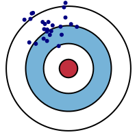 |
Adapted from Fortmann-Roe (2012), “Understanding the Bias-Variance Tradeoff”
Components of the Error Term
- We estimate “true” DGP \(Y = f(X)\) with model \(\widehat{f}(X)\)5, and then we use \(\widehat{f}\) to predict the value of \(Y\) for a point \(x_0\).
- What is our expected error at this point, \(\Err(x_0)\)?
\[ \begin{align*} \Err(x_0) &= \bigexpect{\left.(Y − \widehat{f}(x_0))^2 \right| X = x_0} \\ &= \sigma^2_{\varepsilon} + \left( \bigexpect{\widehat{f}(x_0)} − f(x_0) \right)^2 + \mathbb{E}\left[\widehat{f}(x_0) − \bigexpect{\widehat{f}(x_0)}\right]^2 \\ &= \sigma^2_{\varepsilon} + \left( \text{Bias}(\widehat{f}(x_0)\right)^2 + \bigVar{\widehat{f}(x_0)} \\ &= \text{Irreducible Error} + \text{Bias}^2 + \text{Variance}. \end{align*} \]
In Practice

Appendix 1: Derivation of \(\mathbb{E}[\mu_*^2]\)
\[ \begin{align*} \expect{\mu_*^2} &= \bigexpect{\left(\frac{X_1 + X_2}{2}\right)^2} = \frac{1}{4}\expect{(X_1+X_2)^2} \\ &= \frac{1}{4}\expect{X_1^2 + X_2^2 + 2X_1X_2} = \frac{1}{4}\left(\expect{X_1^2} + \expect{X_2^2} + 2\expect{X_1X_2}\right) \\ &= \frac{1}{4}\left(\Var{X_1} + \expect{X_1}^2 + \Var{X_2} + \expect{X_2}^2 + 2\expect{X_1X_2}\right) \\ &= \frac{1}{4}\left(2\sigma^2 + 2\mu^2 + 2\expect{X_1X_2}\right) \\ &= \frac{1}{2}\left(\sigma^2 + \mu^2 + \expect{X_1X_2}\right) \overset{iid}{=} \frac{1}{2}\left(\sigma^2 + \mu^2 + \mu^2\right) \\ &\implies \boxed{\expect{\mu^2_*} = \mu^2 + \frac{\sigma^2}{2}} \; \; \left(\therefore \; \expect{\mu_*^2} \neq \mu^2 \right) \end{align*} \]
Appendix 2: Derivation of \(\mathbb{E}[\mu^*X_i]\)
\[ \begin{align*} \expect{\mu^*X_1} &= \bigexpect{\left(\frac{X_1 + X_2}{2}\right)X_1} = \frac{1}{2}\expect{X_1^2 + X_1X_2} \\ &= \frac{1}{2}\expect{X_1^2} + \frac{1}{2}\expect{X_1X_2} = \frac{1}{2}\left(\sigma^2 + \mu^2\right) + \frac{1}{2}\mu^2 \\ &\implies \expect{\mu^*X_1} = \mu^2 + \frac{\sigma^2}{2} \end{align*} \]
And since \(X_1\) was chosen without loss of generality,
\[ \boxed{\expect{\mu^*X_i} = \mu^2 + \frac{\sigma^2}{2}} \]
Appendix 3: Derivation of \(\mathbb{E}[\sigma^2_*]\)
\[ \begin{align*} \expect{\sigma^2_*} &= \frac{1}{2}\bigexpect{(X_1 - \mu^*)^2 + (X_2 - \mu^*)^2} \\ &= \frac{1}{2}\bigexpect{\left(X_1^2 + \mu^2_* -2\mu^*X_1\right) + \left(X_2^2 + \mu^2_* - 2X_2\mu^*\right)} \\ &= \frac{1}{2}\expect{X_1^2 + X_2^2 + 2\mu_*^2 - 2\mu^*X_1 - 2\mu^*X_2} \\ &= \frac{1}{2}\left(\expect{X_1^2} + \expect{X_2^2} + 2\expect{\mu_*^2} - 2\expect{\mu^*X_1} - 2\expect{\mu^*X_2}\right) \\ &= \frac{1}{2}\left( 2\sigma^2 + 2\mu^2 + 2\left(\mu^2 + \frac{\sigma^2}{2}\right) - 2\left(\mu^2 + s/2\right) - 2\left(\mu^2 + s/2\right) \right) \\ &= \sigma^2 + \mu^2 + \mu^2 + \frac{\sigma^2}{2} - \mu^2 - \frac{\sigma^2}{2} - \mu^2 - \frac{\sigma^2}{2} = \sigma^2 - \frac{\sigma^2}{2} \\ &\implies \boxed{\expect{\sigma^2_*} = \frac{1}{2}\sigma^2} \end{align*} \]
References
Hastie, Trevor, Robert Tibshirani, and Jerome Friedman. 2013. The Elements of Statistical Learning: Data Mining, Inference, and Prediction. Springer Science & Business Media.
Tharwat, Alaa. 2019. “Parameter Investigation of Support Vector Machine Classifier with Kernel Functions.” Knowledge and Information Systems 61 (3): 1269–1302. https://doi.org/10.1007/s10115-019-01335-4.
Week 9 Lab
Footnotes
This is because an Eigenvalue-Eigenvector pair for a matrix \(\mathbf{M}\) is a vector \(\mathbf{v}\) and scalar value \(\lambda\) which satisfy \(\mathbf{M}\mathbf{v} = \lambda \mathbf{v}\). In words: the result of (left) matrix-multiplying \(\mathbf{v}\) by \(\mathbf{M}\) is the same as scalar-multiplying \(\mathbf{v}\) by a factor of \(\lambda\). In our case the Eigenvector is \(\mathbf{r}^*\) and the Eigenvalue is \(\lambda = 1\), since \(\mathbf{E}\mathbf{r}^* = 1 \cdot \mathbf{r}^*\).
For the math-curious, there are lots of fun results from matrix theory which assure us that \(\mathbf{E}\) is guaranteed to have principal eigenvalue \(\lambda = 1\) üíÜ‚Ü©Ô∏éNote the capital \(N\) for cardinality of observations, vs. (lowercase) \(1, 2, \ldots, n\) for ordinal labels on each observation. This will spare you many headaches!‚Ü©Ô∏é
And that’s why we used math magic to make \(\Pr(x_i \mid \param{p})\) differentiable, in the previous slide!↩︎
We achieve this simplification because the derivative operator is additive: \(\frac{d}{dx}\left[ f(x) + g(x) \right] = \frac{d}{dx}f(x) + \frac{d}{dx}g(x)\)↩︎
It’s even more complicated, since we don’t even know whether the features \(X\) we’ve chosen are actually the features in the world that causally affect \(Y\), but that’s for later classes… Or see Hastie, Tibshirani, and Friedman (2013)!↩︎